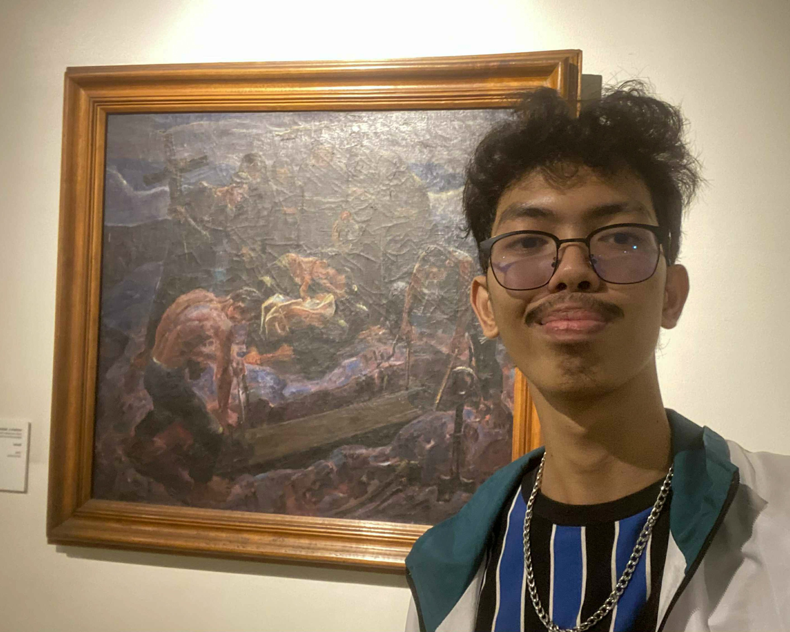
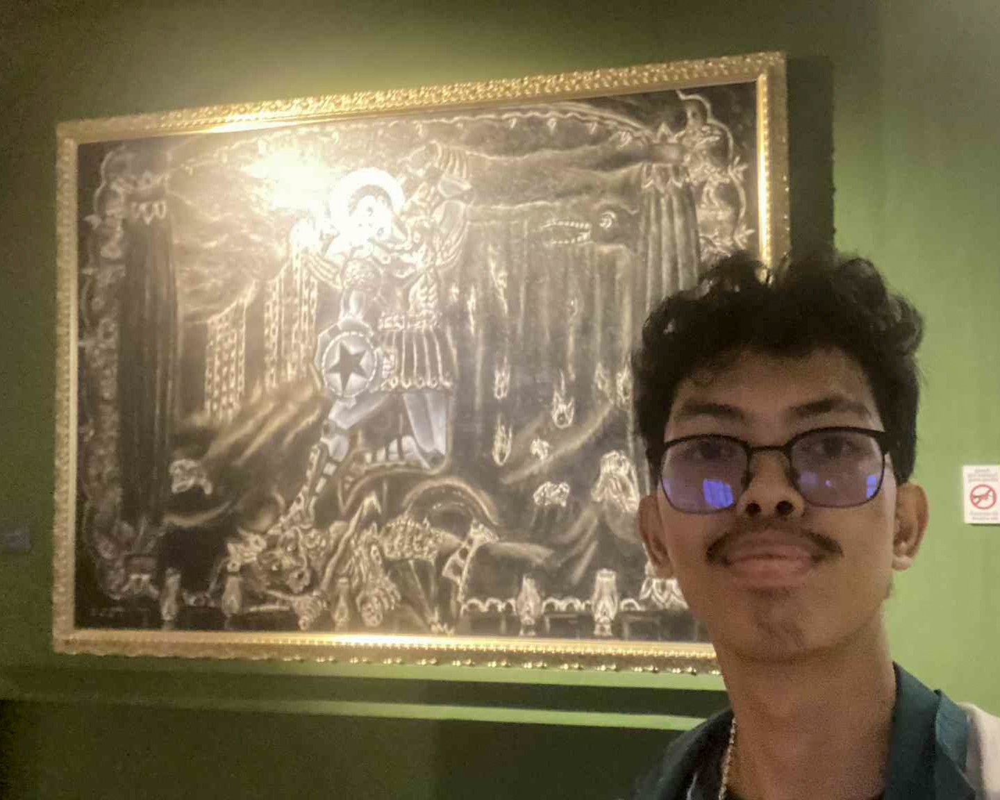
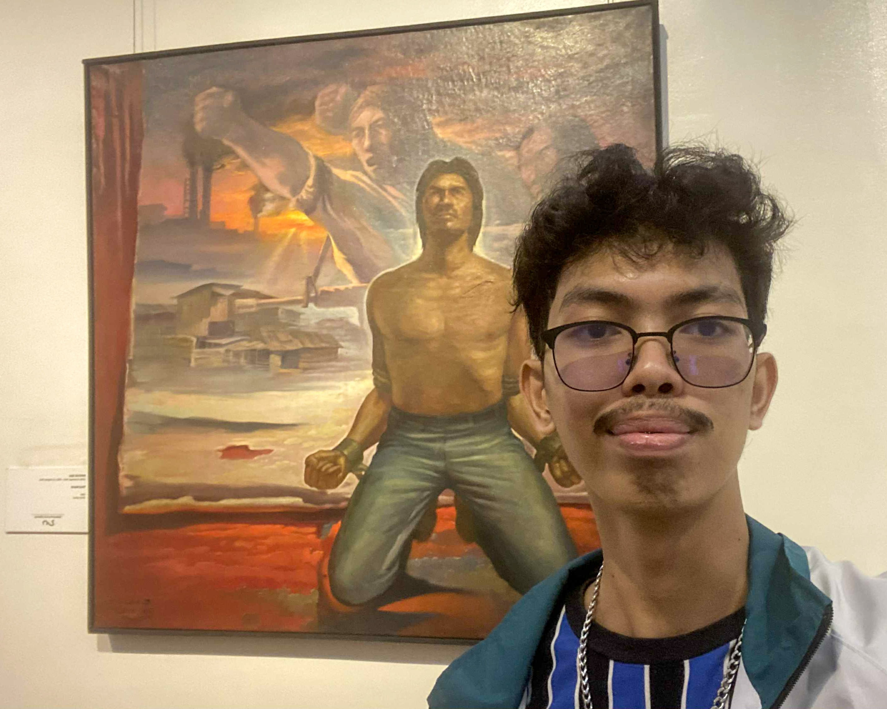
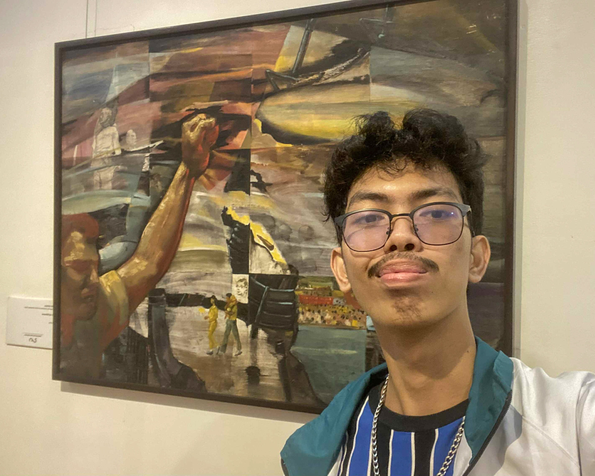

Burial by Vicente Manansala
(1948, Oil on Canvas)
(1948, Oil on Canvas)
When I look at Burial by Vicente Manansala, I see a scene that is sad but also meaningful. The people in the painting come together to honor someone who has passed away, and it shows how Filipinos support one another in times of grief. As a student, the artwork makes me feel the strong connection of family and community. It reminds me that we find comfort in being with others and sharing our emotions. The painting also teaches me to appreciate my loved ones and the traditions that guide us during difficult moments. Burial helps me understand that even in sadness, there is love, unity, and strength. It reminds me to be grateful for the people around me and to value the simple but important moments in life.

St. Michael Duels the Devil by Charlie Co
(2007, Oil on Canvas)
(2007, Oil on Canvas)
The painting St. Michael Duels the Devil by Charlie Co shows a strong fight between good and evil. As a Filipino student, I see this as a reminder that we face many challenges that test our values. The artwork makes me think about the importance of choosing what is right, even when it is difficult. It also shows that courage is not only found in big actions but also in simple choices we make each day. St. Michael inspires me to be honest, responsible, and kind in school and in my community. The painting teaches me that our decisions affect others and that doing the right thing helps create a better world. It encourages me to stay strong and to stand for what is good.

Third World by Papo de Asis
(1981, Oil on Canvas)
(1981, Oil on Canvas)
The artwork Third World by Papo de Asis makes me think about the struggles many Filipinos face. As a student, it reminds me that not everyone has the same opportunities or resources. Some people experience poverty and hardship every day. This painting encourages me to be grateful for my education and to think about how I can help others who are less fortunate. It also pushes me to become more aware of social problems and to use what I learn in school to make a positive difference. Third World teaches me that learning is not just for myself but also for my community. It inspires me to be caring, responsible, and active in helping others so that our country can move toward fairness and a brighter future.

Landas ng Kalayaan by Gene de Loyola
(1985, Oil on Canvas)
(1985, Oil on Canvas)
The painting Landas ng Kalayaan by Gene de Loyola reminds me of the many Filipinos who fought and worked hard for our freedom. As a student, it makes me appreciate the rights that I enjoy today, such as studying, speaking my thoughts, and planning a better future. The artwork shows courage, hope, and unity, which are important values for our nation. It also reminds me that freedom is not only about the past but also about what we do today. I feel encouraged to be a good citizen and to use my freedom wisely. Landas ng Kalayaan teaches me to respect others, help my community, and do my part in building a fair and peaceful society that honors the sacrifices of those who came before us.

Hearsay by Demetrio Padua Jr.
(2012, Mixed Media)
(2012, Mixed Media)
Hearsay by Demetrio Padua Junior makes me think about how important truth is in our daily lives. As a Filipino student who often hears and reads information from social media, I know how easily false stories can spread. The artwork reminds me to think before I speak and to make sure what I share is true. It teaches me that words have power and can affect other people in good or bad ways. Hearsay encourages me to be careful, honest, and fair when I communicate with others. It also shows that every person has a role in creating a community that values truth. This painting inspires me to use my voice wisely and to help build a society where kindness and honesty guide what we say and do.